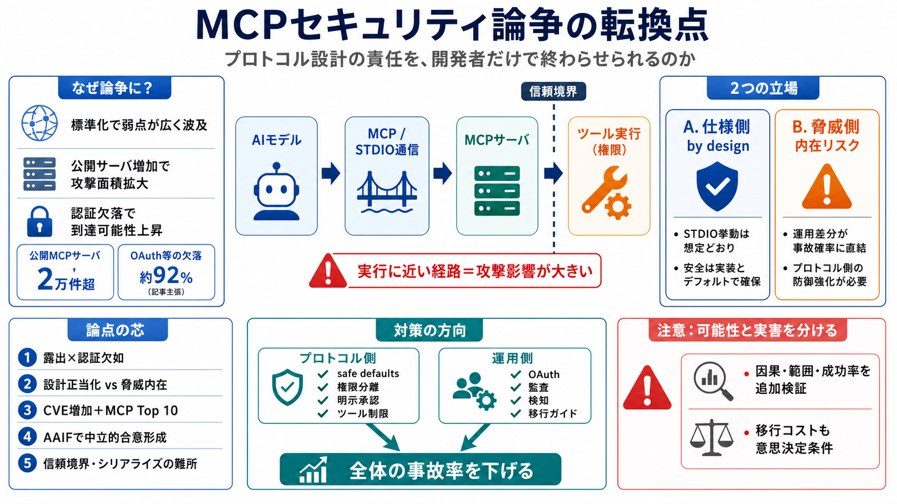

観測（記事の主張）
公開MCPサーバが「2万件超」。
internet exposure

MCP
セキュリティ転換点
プロトコル設計の責任を、開発者だけで終わらせられるのか。
標準化×普及
論争の理由
MCP（Model Context Protocol）はAIが外部データ／ツールを呼ぶ手順を標準化します。その結果、設計の弱点が多くの実装に同時に波及し、事故の規模が大きくなり得ます。
露出が“攻撃面積”に
到達可能性
観測（記事の主張）
公開MCPサーバが「2万件超」。
internet exposure
防御の欠落
監査済み本番の約92%でOAuth等が欠落。
（基本防御なし）
設計思想が正しくても、現場の実装差分がそのまま被害確率に直結します。
by design か
“内在”か
推進側（記事ではAnthropic）はSTDIO transportモデルを「designどおり」とし、入力サニタイズ等を開発者の責任に置きます。一方、セキュリティ側は“Exposed by Design”のように危険な悪用パスが内在すると主張します。
立場A（仕様）
STDIO挙動は想定どおり。
安全は安全なデフォルト＋実装で確保。
立場B（脅威）
運用・実装はばらつく。
プロトコル側で防御を強化すべき。
信頼境界のズレ
trust boundary
セキュリティ論争は技術だけでなく「誰が何を守るか」の境界がズレていることから起きます。境界が曖昧だと、入力サニタイズが追いつかない領域が残ります。
境界
入力（untrusted）
実行
ツール呼び出し（privileged）
損失
権限逸脱（impact）
論点の芯
5つ
i
露出×認証欠如で到達可能性が上がる。
ii
STDIOを巡る設計正当化 vs 脅威内在の衝突。
iii
CVE増加＋「MCP Top 10」で対策が体系化。
iv
AAIF（Linux Foundation傘下）で合意形成の中立性。
v
AISCの観点（信頼境界、シリアライズ等）が難所を明確化。
STDIO transport
実行経路
STDIO transportモデルは、モデルとMCPサーバの間で通信し、ツール実行へ接続する経路になります。この“実行に近い経路”が攻撃に悪用されると、影響が大きくなり得ます。
経路
STDIO（通信）
媒介
プロトコル（文脈／要求）
結果
ツール実行（権限）
CVE・指針の増加
体系化
個別の脆弱性（CVE）が増えるだけでなく、OWASPの類型化（「MCP Top 10」）により、守るべきチェック観点が見えやすくなります。これは主観ではなく“再現可能な危険”として扱える材料が増えたことを示唆します。
CVEの意味
どのコンポーネント／実装が影響かを切り分け可能。
OWASPの意味
リスク類型で対策の優先順位を整理。
責任の再配分
“設計 vs 実装”
中心の問いは「プロトコル硬化（仕様での防御強化）」か「開発者負担（回避策の継続）」か、という二択に見えます。実際は段階導入の中間案もあり得ます。
プロトコル側
権限分離、明示的承認フロー、ツール制限などの安全なデフォルト。
移行・運用
後方互換のガイド、検証・監査・検知（安全ゲート）で事故率を下げる。
AISCの観点
難所
AISC（NSAのAIセキュリティセンター）は、信頼境界や暗黙の信頼関係、シリアライズ経路など“根本層”の設計観点を提示しています。入力サニタイズだけでは解けない可能性がある、ということです。
信頼
trust boundary設計
データ
シリアライズ経路
前提
暗黙の信頼関係
OAuthの価値
認証の差
OAuth等がない（または弱い）と、外部の不正利用者が到達しやすくなります。記事の主張では“本番の多くで基本認証が欠落”しており、攻撃入口が広い点が問題視されています。
欠落時
到達可能性が上がる → 不正利用の入口が広がる
有効時
認証で“正規の呼び出し”を絞り、被害の前段を遮断
ガバナンスの転機
AAIF
MCPのガバナンスがLinux Foundation傘下のAgentic AI Foundation（AAIF）へ移ることで、特定ベンダーの拒否権に偏りにくい議論の場が整う可能性があります。とはいえ、設計変更の採用や移行計画が結果を左右します。
期待
中立性・合意形成の改善。
不確実性
互換性要件、採用度合い、移行支援の有無。
“危険”の扱い注意
可能性 vs 実害
記事は危機感を高めますが、技術因果（STDIOのどのメカニズムが、どの条件で、どう攻撃されるか）や被害観測（成功率、侵害件数、時系列）が不足している可能性があります。危険の可能性と実害の頻度を同一視しない視点が重要です。
見落としがちな点
攻撃観測データ、対象CVE範囲、バージョン差分
意思決定の条件
因果・範囲・移行コストを追加検証して確度を上げる
まとめ
次の一手
MCPはAIエージェント基盤の成熟で「設計責任の再配分」を迫る段階に来ています。結論としては、仕様の安全なデフォルトを強めつつ、移行・監査・検知まで含めて“全体の事故率”を下げる設計が必要です。
プロトコル
信頼境界・権限・承認を仕様で固める（safe defaults）。
運用
OAuth等の認証、監査、検知で到達可能性を抑える。
No references found